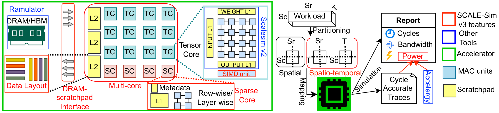
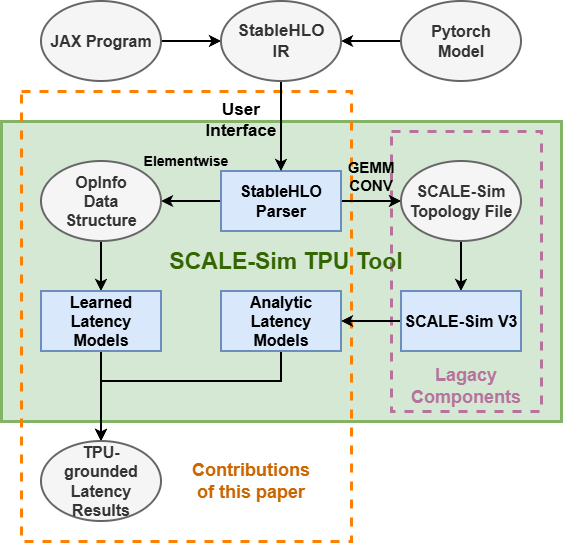

SCALE-Sim Across the Silicon Lifecycle:
◆ [SCALE-Sim V3] Pre-Silicon Cycle-Accurate Simulation for Next-Gen AI Accelerators
◆ [SCALE-Sim TPU] Post-Silicon Evaluation on State-of-the-art AI Accelerators
Abstract
Modern design and simulation methodologies have led to design tools being increasingly used in the AI landscape — enabling rapid design-space exploration (DSE) and performance/power analysis to meet the demands of modern AI workloads. In this landscape, SCALE-Sim helps in designing next-gen AI accelerators through pre-silicon cycle-accurate full-system simulation and choosing AI models through post-silicon evaluation on state-of-the-art (SOTA) AI accelerators.
SCALE-Sim is widely used in industry including Arm and IMEC as well as academia, including Stanford University, with more than 500 GitHub stars. In this tutorial, we will present two major updates to the SCALE-Sim infrastructure.
Tutorial Overview


SCALE-Sim v3: Pre-Silicon
A modular, cycle-accurate simulator that extends v2 with five significant enhancements:
SCALE-Sim TPU: Post-Silicon
Validated against measured on-device runtimes on Google TPU v4 and TPU v6e:
- Regression analysis across diverse matrix sizes
- Up to R² = 0.99 vs. measured TPU fusion-kernel runtimes
- Supports Weight-Stationary (WS) and Input-Stationary (IS) dataflows
- Cycle-level GEMM performance estimation for TPU-class architectures
- Enables deployment studies for upcoming TPUv7 (Ironwood) systems
Schedule
Tentative — Subject to Change
Prior Offerings
This is the first iteration of the SCALE-Sim tutorial presenting SCALE-Sim v3 and SCALE-Sim TPU. Previous iterations using v2 of the simulator:
Organizers
Invited Presenters
Resources
Papers
- J. Dang, R. Raj, C. Man, J. Tong, and T. Krishna. "SCALE-Sim TPU: Validating and Extending SCALE-Sim for TPUs." arXiv preprint arXiv:2603.22535, 2026.
- R. Raj, S. Banerjee, N. Chandra, Z. Wan, J. Tong, A. Samajdar, and T. Krishna. "SCALE-Sim v3: A modular cycle-accurate systolic accelerator simulator for end-to-end system analysis." In 2025 IEEE International Symposium on Performance Analysis of Systems and Software (ISPASS), pp. 186–200. IEEE, 2025.
- A. Samajdar, J.M. Joseph, Y. Zhu, P. Whatmough, M. Mattina, T. Krishna. "A systematic methodology for characterizing scalability of DNN accelerators using SCALE-Sim." In 2020 IEEE International Symposium on Performance Analysis of Systems and Software (ISPASS), pp. 58–68. IEEE, 2020.
Source Code
View on GitHub